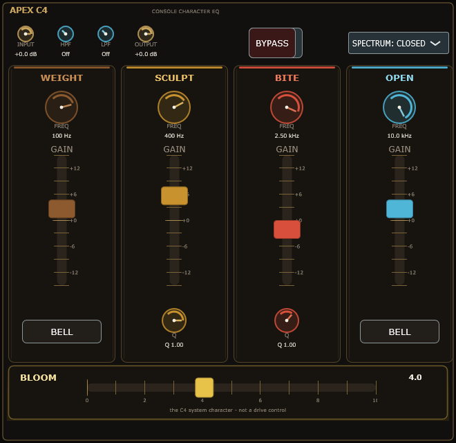
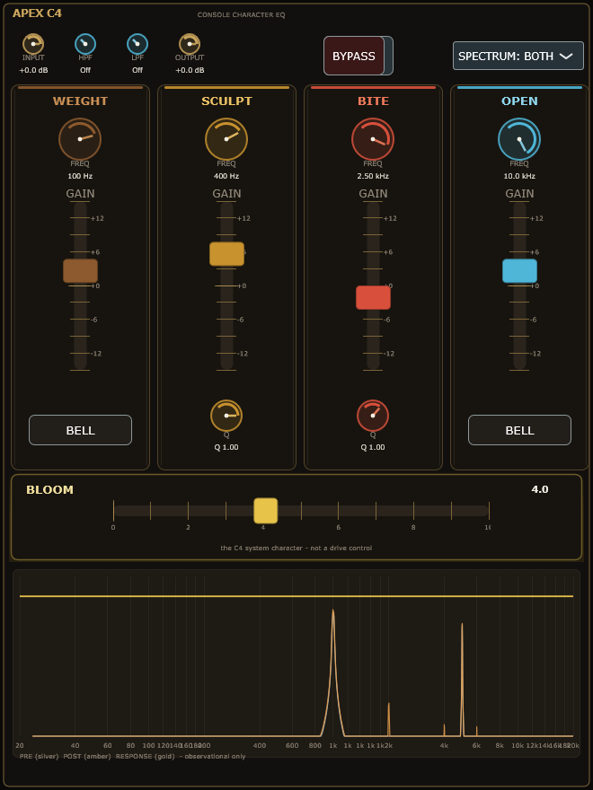
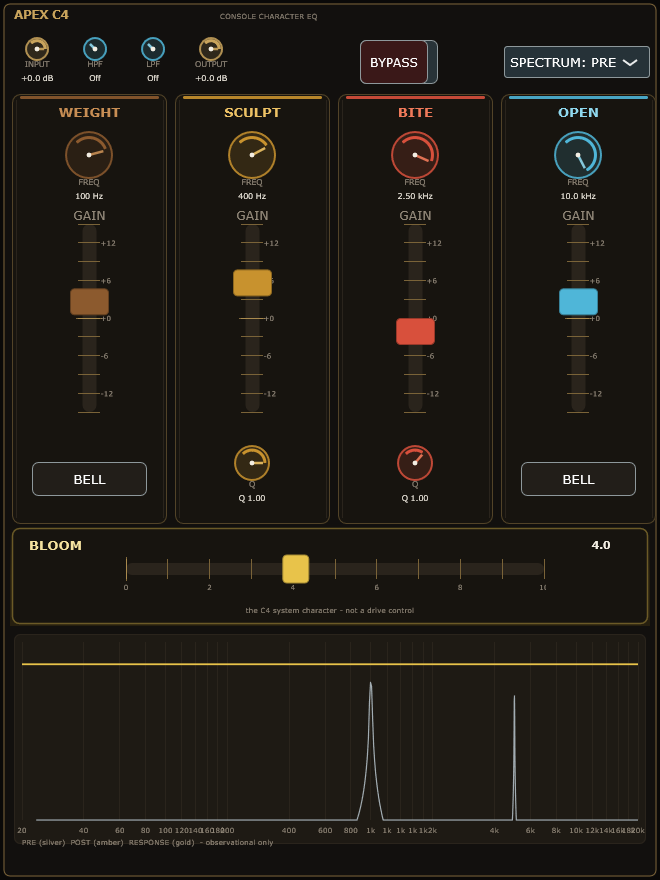
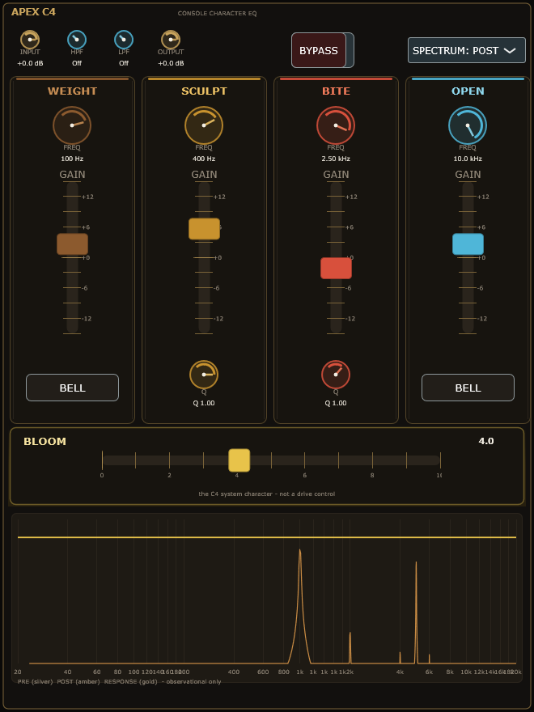
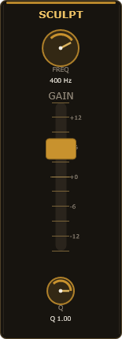
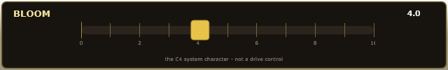
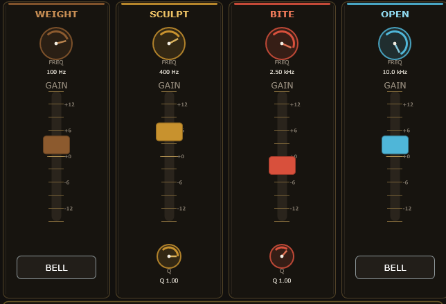
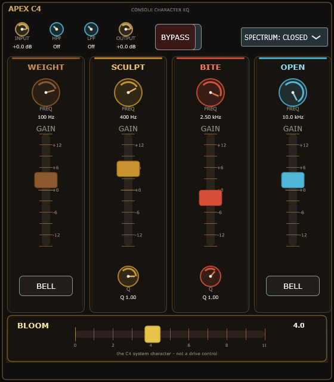
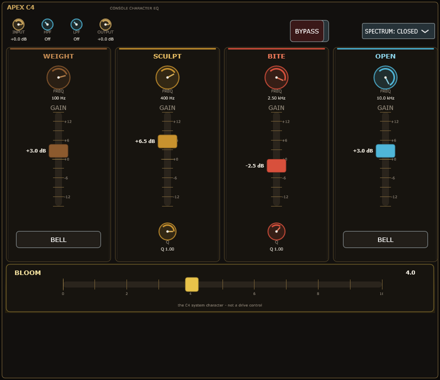

These images are rendered from the ACTUAL C4Editor implementation (Source/C4UI/C4Editor.h) via the C4.Preview harness. The native window preview can be reopened any time with C4_PREVIEW_LIVE=1.










VERTICAL CONSOLE architecture: the four tall strips (WEIGHT bronze / SCULPT amber / BITE red-orange / OPEN ice-blue) are the hero; the top utility row is supporting; BLOOM (gold, 0-10, default 4.0) owns the bottom rail; the Spectrum Flag expands underneath the console. The analytic response curve (gold) is the LINEAR transfer only - BLOOM harmonics are not drawn as a curve. No draggable spectrum nodes. DSP (Phases 5-6) is unchanged by any visual work.